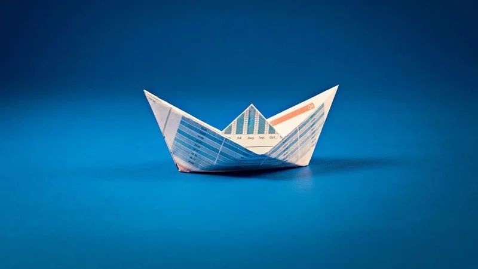

En un contexto donde el cambio climático, la pérdida de biodiversidad y la sobreexplotación de los recursos naturales marcan la agenda global, ha surgido un nuevo enfoque económico que propone una relación más armónica entre el desarrollo humano y el medio ambiente: la economía azul.
Al estudiar elCurso en Cambio Climático de la Escuela de Sostenibilidad de la Universidad Europea, podrás explorar en profundidad esta corriente, que no solo busca preservar los océanos, sino también aprovechar su potencial para generar crecimiento económico, innovación y empleo sostenible. Asimismo, también puedes cursar una especialización como el Master en Cambio Climático Online.
A continuación, te explicamos en qué consiste exactamente y cuáles son sus principales ventajas y desafíos.
Índice de contenidos:
La economía azul es un modelo económico que promueve el uso sostenible de los recursos marinos y costeros para impulsar el crecimiento, el bienestar social y la protección del medio ambiente.
A diferencia de la economía tradicional, que ha tenido un impacto muy negativo en los océanos en aspectos como la contaminación, la sobrepesca y otros, la economía azul busca preservar el equilibrio ecológico mientras se aprovecha de manera responsable el potencial del entorno marino.
Por lo tanto, este enfoque va en línea con los Objetivos de Desarrollo Sostenible (ODS) de las Naciones Unidas, especialmente con el ODS 14, que aboga por la conservación y el uso sostenible de los recursos marinos.
Las características mencionadas se traducen en una serie de principios fundamentales que deben guiar tanto a los gobiernos como al sector privado.
Estos pilares aseguran que el uso de los océanos no se traduzca en su degradación, sino en un círculo virtuoso de conservación y prosperidad que contribuya a la bioeconomía circular.
La economía azul está lejos de ser una utopía: ya existen numerosos ejemplos de su aplicación en todo el mundo. Algunos de los casos más relevantes, que demuestran su viabilidad, son:
A pesar de su gran potencial, la economía azul aún debe superar obstáculos importantes. La falta de una regulación clara en muchos países dificulta su implementación, mientras que la poca financiación impide que algunos proyectos sostenibles terminen de despegar. Además, existen conflictos entre los intereses económicos tradicionales y los objetivos de conservación marina, especialmente en sectores como la pesca industrial o el turismo.
Además, es necesario garantizar que las comunidades costeras participen activamente en este modelo y que no queden excluidas de sus beneficios. Para ello, es clave fomentar la educación en medio ambiente y promover una mentalidad colectiva que priorice la sostenibilidad ambiental a largo plazo frente a la búsqueda de beneficios inmediatos.
La economía azul ayuda a mitigar los efectos del cambio climático mediante la captura de carbono, especialmente en ecosistemas como manglares y algas marinas, y protege la biodiversidad. No obstante, además de sus ventajas ambientales, tiene otros muchos beneficios:
La economía azul es una oportunidad única para reconciliar el desarrollo económico con la salud de nuestros océanos. Su éxito no solo depende de la tecnología o la inversión, sino también del compromiso de la sociedad para apoyar un modelo más justo y sostenible.
En la Universidad Europea ofrecemos numerosas carreras relacionadas con el medio ambiente que aportan una perspectiva integral para quienes quieren involucrarse activamente en la transición ecológica. Si estás buscando una formación en sostenibilidad enfocada al cambio climático y al medio ambiente, la Escuela de Sostenibilidad es tu sitio.